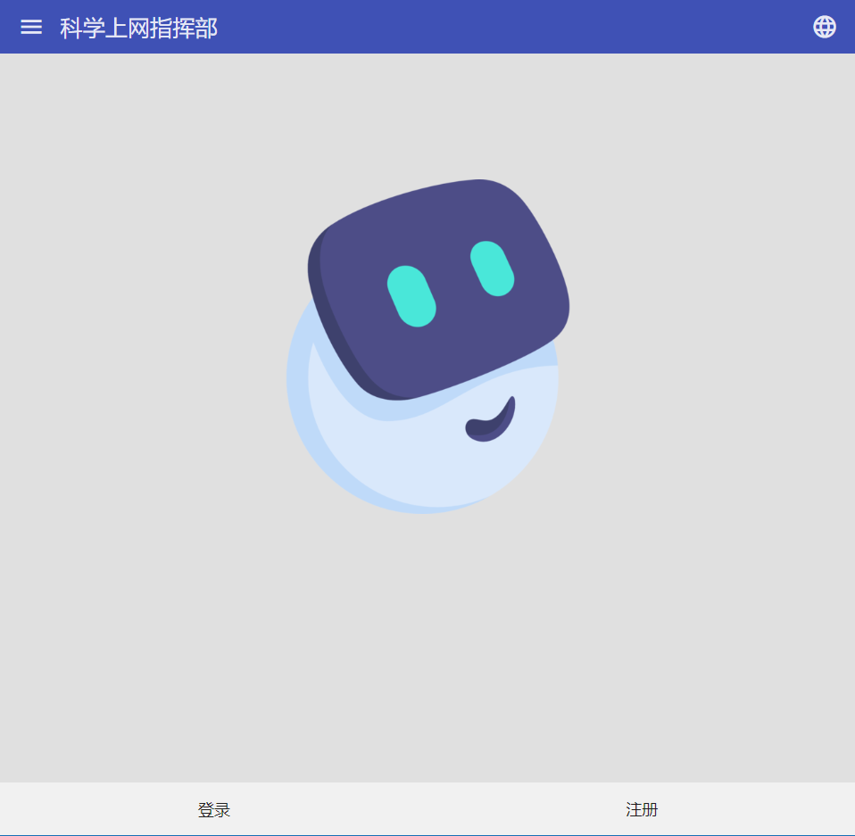
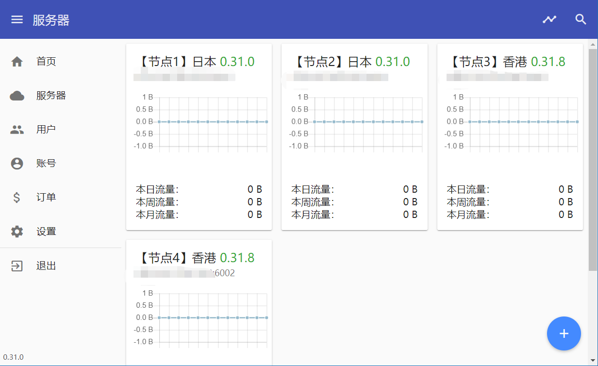
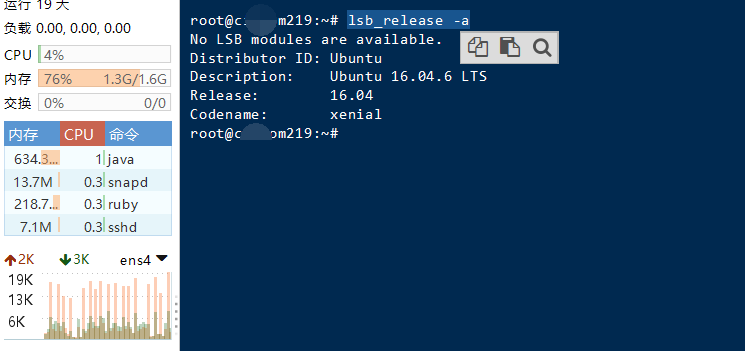
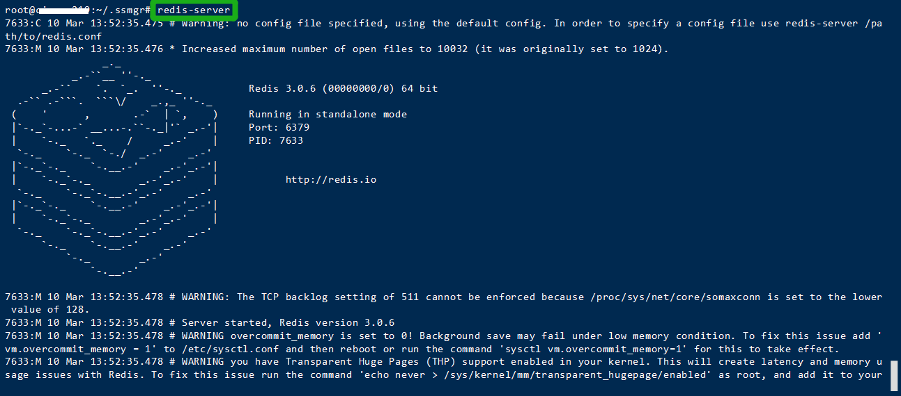
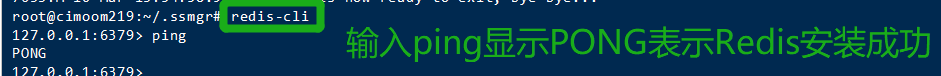
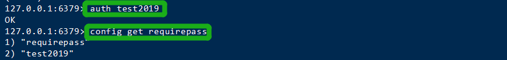
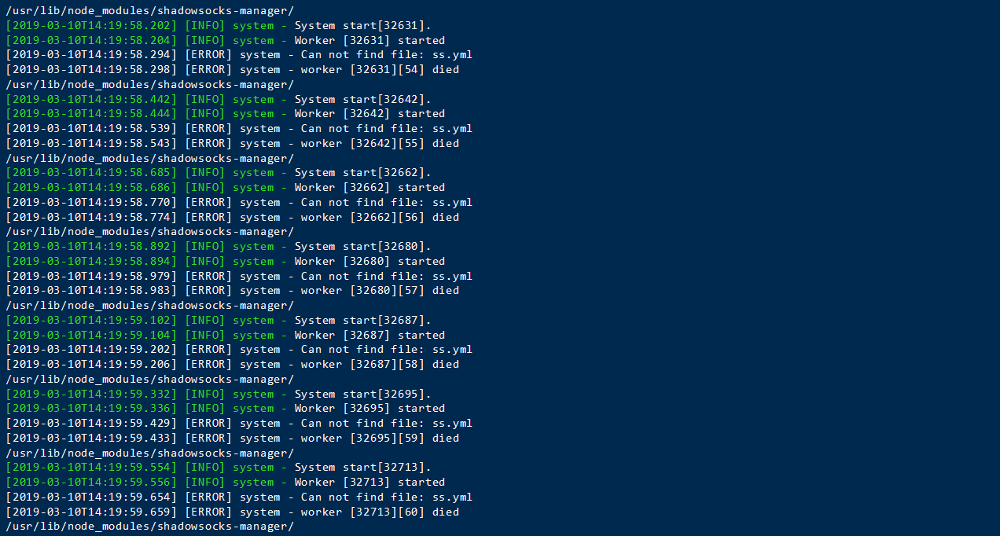
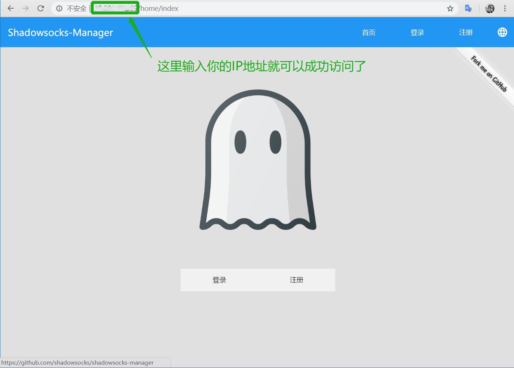

配合上文 记一次部署香港节点实现科学上网的过程【1】 ，你也可以拥有自己的飞机场。
免责声明：本文一切只作为教学，任何人不可用做非法盈利，望悉知。
面板预览 

搭建过程 注意：SSMGR从 0.30 版本开始必需要配置 redis。
检查系统 推荐：Ubuntu 16.04，尽量不要问我XXX系统版本行不行，不知道没试过。

## 部署节点
** 其实安装面板的过程就等于在你部署节点完之后，才能进行下面一系列操作。所以上一篇文章的操作是必需要做完，而这篇讲的是后续操作如何在节点基础上搭建面板。**
Redis部分 安装 redis在root权限下输入以下指令即可。
1 2 sudo apt-get update sudo apt-get install redis-server
启动

### 检查
**此时，当你输入ping回车显示PONG则表示Redis安装成功**

### 设置密码

1 2 3 config set requirepass PASSWD //将PASSWD替换成你要设置的密码 auth PASSWD //验证密码 config get requirepass //查询密码
## 创建文件部分
### 新建文件夹
**这里我们需要在根目录新建一个文件夹叫做.ssmgr，然后切换到该目录。**
1 2 mkdir ~/.ssmgr cd ~/.ssmgr
### 创建三个重要的文件
他们分别是`ss.yml`、`webgui.yml`、`ss.sh`，请各位注意，千万不能直接复制粘贴，因为文件**不能包含注释，否则报错。**
【1】ss.yml
1 2 3 4 5 6 7 type: s shadowsocks: address: 127.0.0.1:6001 manager: address: 0.0.0.0:6002 password: 'qwer123' //这里的密码是你添加节点时输入的密码 db: 'db.sqlite'
【2】webgui.yml
1 2 3 4 5 6 7 8 9 10 11 12 13 14 15 16 17 18 19 20 21 22 23 24 25 26 27 28 29 30 31 32 33 34 35 36 webgui.yml type: m manager: address: 220.xxx.xxx.216:6002 //这里是你等会儿搭建完后访问的IP地址 password: 'qwer123' //这里填写ss.yml里的密码 plugins: flowSaver: use: true user: use: true account: use: true email: use: true type: 'smtp' username: 'username' password: 'password' host: 'smtp.your-email.com' webgui: use: true host: '0.0.0.0' port: '80' # site: 'http://yourwebsite.com' //这里你可以填写你要绑定的域名，但提前是要去进行域名解析 # icon: 'icon.png' # skin: 'default' # googleAnalytics: 'UA-xxxxxxxx-x' # gcmSenderId: '476902381496' # gcmAPIKey: 'AAAAGzddLRc:XXXXXXXXXXXXXX' db: 'webgui.sqlite' # 从 0.30 开始需要配置 redis redis: host: '127.0.0.1' port: 6379 password: 'test2019' //填入你设置Redis的密码 db: 0
【3】ssmgr.sh
1 2 3 4 5 6 nginx //启动nginx setsid ss-manager -m chacha20-ietf-poly1305 -u --manager-address 127.0.0.1:6001 & setsid ssmgr -c ss.yml & setsid ssmgr -c webgui.yml & //启动面板 seisid redis-cli -p 6379 -a Cheers#2019 & //登录redis seisid redis-server &
完成搭建 如果你的机子输入以下指令，显示如图无报错，那么恭喜你面板搭建成功啦！

## 访问面板
**这里输入你webgui.yml里面的IP地址进行访问即可，界面大概长成这个样子。**

Pの总结 在系统选择上，P君个人倾向于Ubuntu 16.04，同时面支持使用支付宝接口 (需要申请)等等插件。接下来我贴出我常用的操作指令，这里几乎包含了我常用的指令，当然大部分只能用于Ubuntu 16.04
常用指令总结 1 2 3 4 5 6 7 8 9 10 11 12 13 14 15 16 17 18 19 20 21 22 23 24 25 26 27 28 29 30 31 32 33 34 35 36 #【阿里云Ubuntu更新源】 /etc/apt/sources.list deb http://mirrors.aliyun.com/ubuntu/ bionic main restricted universe multiverse deb http://mirrors.aliyun.com/ubuntu/ bionic-security main restricted universe multiverse deb http://mirrors.aliyun.com/ubuntu/ bionic-updates main restricted universe multiverse deb http://mirrors.aliyun.com/ubuntu/ bionic-proposed main restricted universe multiverse deb http://mirrors.aliyun.com/ubuntu/ bionic-backports main restricted universe multiverse sudo apt-get update #【后台运行Shadowsocks】 setsid ss-manager -m chacha20-ietf-poly1305 --manager-address 127.0.0.1:6001 & setsid ssmgr -c ss.yml & setsid ssmgr -c webgui.yml & # 【检查OS版本】 lsb_release -a # 【安装ShadowSocks-libev】Ubuntu 14.04 and 16.04 sudo apt-get install software-properties-common -y sudo add-apt-repository ppa:max-c-lv/shadowsocks-libev -y sudo apt-get update sudo apt install shadowsocks-libev # 【安装Node.js】 curl -sL https://deb.nodesource.com/setup_10.x | sudo -E bash - sudo apt-get install -y nodejs #【安装 / 升级】 apt install npm sudo npm i -g shadowsocks-manager --unsafe-perm # 【启用 TCP BBR - 优化节点速度】 git clone https://github.com/flyzy2005/ss-fly.git ss-fly/ss-fly.sh -bbr
参考链接 【官方】GitHub - ShadowsocksManager 【官方】ShadowsocksManager使用指南 【菜鸟教程】Redis参考 【N!CE波】设置Redis访问密码
最后更新时间：2019-03-11 19:39:50